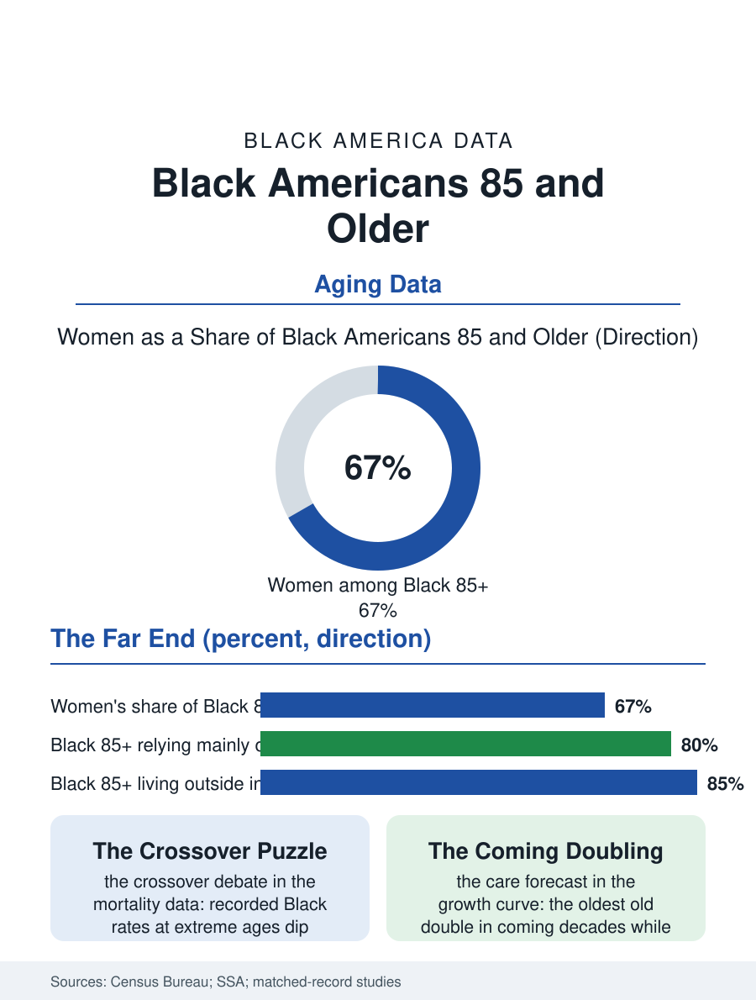

Black Census
The Archive Generation: Black Americans Eighty-Five and Older
Half a million Black Americans past eighty-five, two-thirds women, the living archive of the modern century and the care system's central forecast. The oldest file.

The fastest-growing age band in Black America, proportionally, is the one at the top: the population aged eighty-five and older, the oldest old, has multiplied across the recent decades as survival improved, and it will multiply again as the large mid-century cohorts arrive. The census counts roughly half a million Black Americans past eighty-five, overwhelmingly women, increasingly living alone or with family, and carrying the longest life stories in the population. This article reads the oldest file.
The Shape of Extreme Age
The demography of the oldest old begins with the survival curve's racial crossover puzzle, one of the field's longest-running debates: at the most advanced ages, the recorded Black mortality rates in some datasets fall to or below the white rates, a finding researchers attribute in part to data quality, the age misreporting of the era when Black births went unregistered, and in part to survivor filtering, the hard truth that a population filtered by the mortality schedule of the harder century arrives at eighty-five composed of its most durable members. The bureau and the demographers have spent decades cleaning the numerator and the denominator, and the modern matched-record studies find the crossover largely, though not entirely, an artifact, leaving a smaller genuine residue of selective survival. What is not debated is the composition: at eighty-five and above the Black population is roughly two-thirds women, the widowhood file's arithmetic extended to its limit, and its geography concentrates in the South of the birth cohorts' youth, overlaid with the retirement and return migrations of their later years. Centenarians, the hundred-plus population the bureau counts in the tens of thousands nationally across races, include a Black contingent whose verified ages the gerontologists treat with professional caution and whose unverified ones the churches celebrate without reservation, the birthday parties for the 105-year-olds being a genre of Black congregational life.
Living Arrangements at the Far End
The living-arrangement tables at eighty-five tell the care story in advance. A majority of the oldest Black women live alone or with family, with institutional residence, the nursing home file's population, rising steeply only past ninety, and the multigenerational household at these ages reverses its presumed direction entirely: the eighty-seven-year-old is the household's ancestor, not its dependent, even when she is also its care recipient, a dual status the surveys' categories handle clumsily. The income file at the far end is Social Security and little else, the benefit's share of income approaching totality, which makes the program's every parameter, the cost-of-living adjustment, the survivor rules of the widowhood file, a direct determinant of the oldest old's material life; asset poverty at these ages is near-universal in the wealth data, the house being the great exception where it survives. The health profile is the compression question's terrain: the oldest old carry the heaviest disease counts in the health file and, in the disability data, the highest rates of difficulty with the activities of daily living, which converts the population's growth into the care economy's central forecast, the demand curve for the home health aides and family caregivers whose own files sit in the employment section, the oldest old of one generation tended by the aging daughters of the next in a chain the long-term care system only partly sees.
The Archive Generation
The oldest old are also the population's living archive, and the demographers' tables have a cultural shadow the oral historians work: a Black American of ninety in the current data was born into the Jim Crow South or its northern counterpart, formed by the migration or the staying, and has personally traversed the entire modern history this atlas documents statistically, from the 1940 census's undercounted child to the present file's enumerated elder. The institutions treat them accordingly, the church's mother board, the family's matriarch and patriarch chairs, the homecoming's honored front row, statuses the culture formalized long before gerontology named the cohort. The policy file ahead is written by the growth curve: the oldest-old population's doubling across the coming decades multiplies every system this section touches, the survivor benefits, the nursing and home care workforces, the housing stock's accessibility, and the medical system's geriatric capacity, at exactly the moment the caregiver generation's own ratio thins. The file closes at the birthday party in the fellowship hall, the proclamation from the mayor's office, the five generations in one photograph, the baby and the ninety-six-year-old at the frame's two edges. The census counts half a million past eighty-five and climbing. The photograph shows what the count means: the whole of Black America's modern century, present in one person, still giving the blessing at the table she has headed for fifty years.
More in Black Census
The Black Population of the United States: Size, Definitions, and Distribution
The Black population of the United States totals 52.8 million — 15.4 percent of the nation. How the Census Bureau defines and counts the population, and where it lives.
Black Median Household Income in the United States
Black median household income stands at $56,490 in the Census Bureau's annual income report — how the figure is measured, how it compares, and what drives it.
The Black Poverty Rate: Levels, Children, and the Long Trend
The official Black poverty rate is 17.1 percent — against 11.1 percent nationally and 7.7 percent for non-Hispanic White Americans. How poverty is measured and what the data show.
Source: U.S. Census Bureau population estimates by age; Social Security Administration data; demographic matched-record mortality studies.